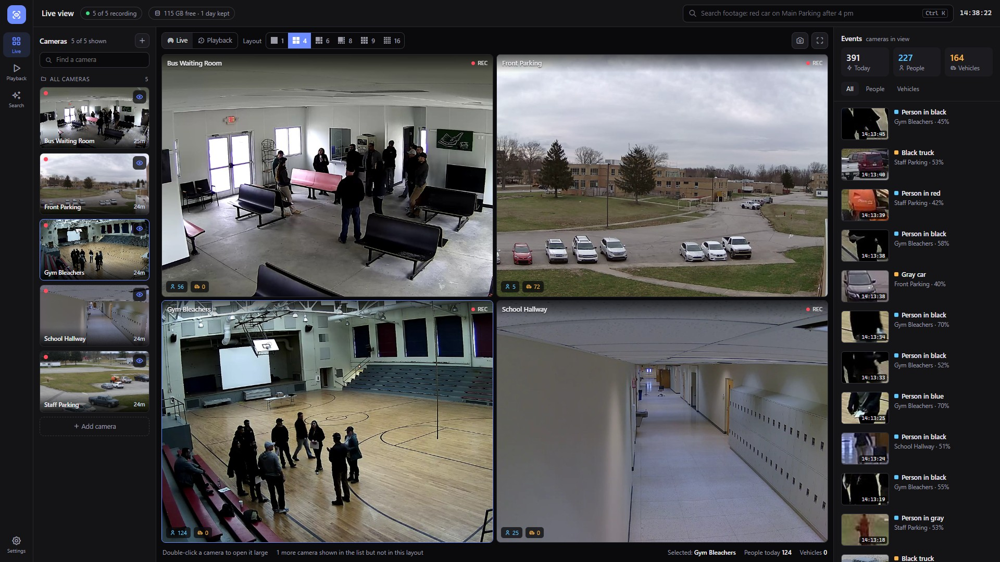
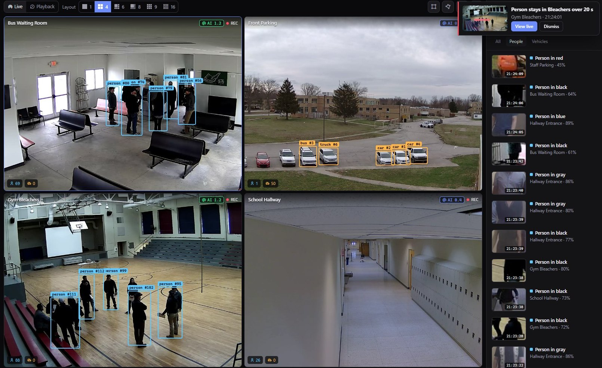
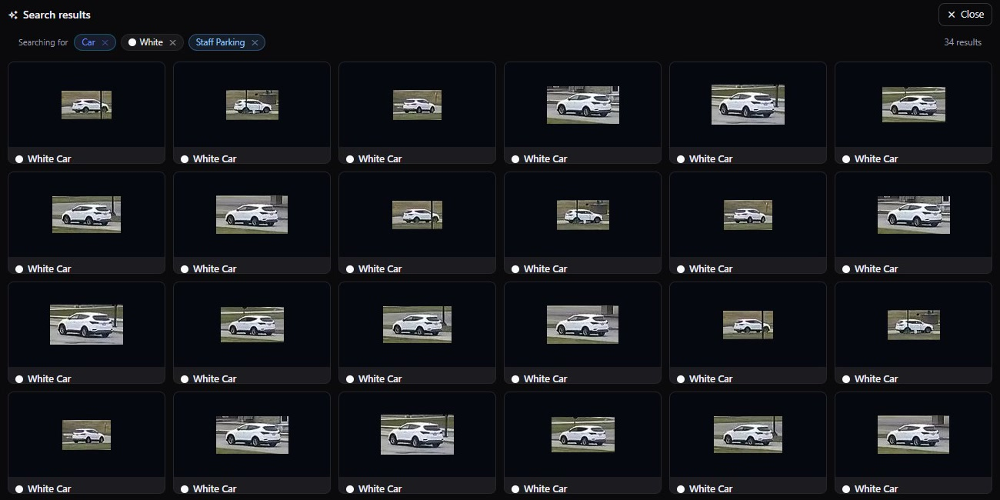
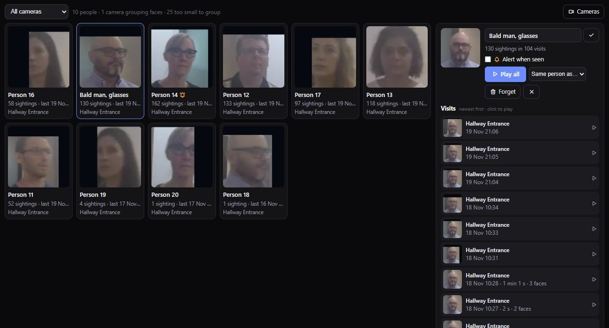
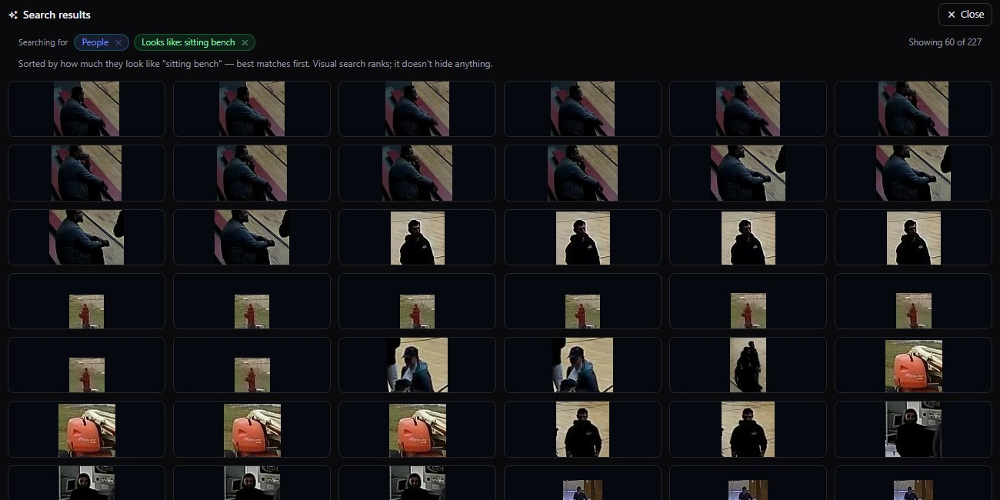
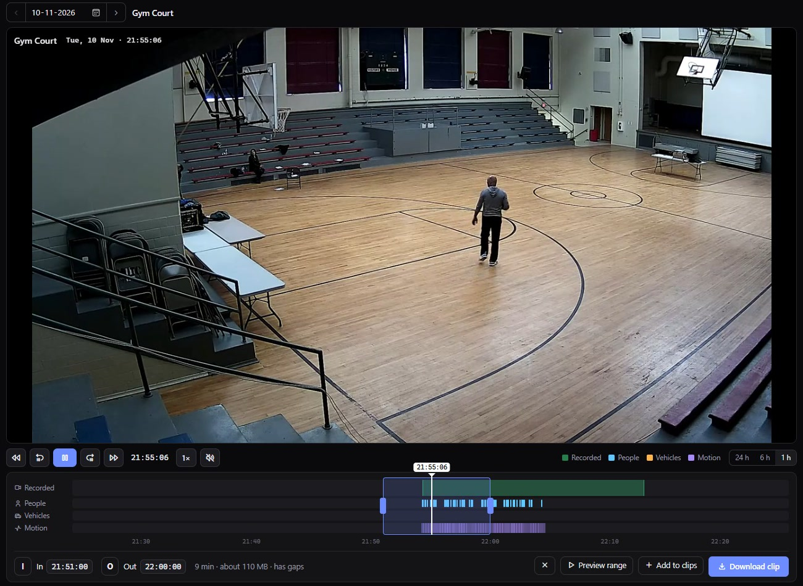
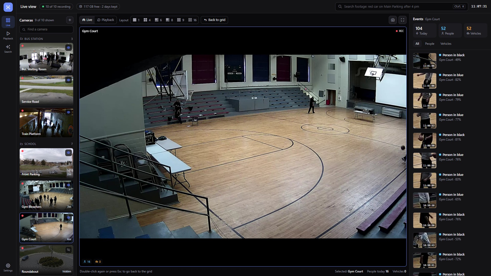
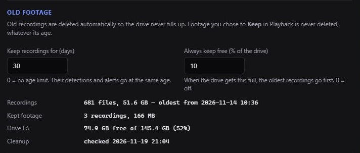

Live camera wall
1 to 16 cameras over WebRTC. Show or hide any camera; double-click for full size.
AI Video Investigator records your IP cameras, detects every person and vehicle, alerts you the moment something happens, and finds any moment when you type what you're looking for. It reads number plates, groups faces by person, and keeps the disk from ever filling up.
Built in C++ and Qt 6 by Haris P P. Source available on request.
One-minute tour, recorded from the running app. No sound.

1 to 16 cameras over WebRTC. Show or hide any camera; double-click for full size.

Zones and lines on each camera. Pop-up, sound and snapshot within about a second.

Objects, colours, cameras, times, plates and people, understood instantly and offline.

Faces grouped by person. Every visit of the same person, playable one after another.

Describe how it looks. An image-text model ranks every detection.

People, vehicles, motion and alerts on 24 hours. Drag to cut a clip, or keep it.
Hours of footage become a list of people and vehicles you can search, play and export, and the cameras tell you when something needs attention, without sending a single frame to the internet.
Every camera plays straight from its own stream in the browser. Pick a layout, hide the cameras you don't need, and open any one full size.
Draw zones and lines on any camera, then add rules in plain words. Live analysis follows every person and vehicle, and when a rule matches you get a pop-up with a snapshot and a sound, usually within a second.
Cameras with rules or live analysis are watched as it happens; everything else is searched from the recordings. Objects are tracked from frame to frame, so a parked car is one event, not one per second, and each event keeps its best picture and its colour.

Type white car at Staff Parking or people at the Bus Waiting Room in the last hour. The search understands objects, colours, camera names, dates and times, number plates and people, shows what it understood as filters you can remove, and suggests close matches when nothing fits exactly.
When words aren't filters, an image-text model (CLIP, running locally) ranks every detection by how well it matches. For people sitting on a bench, the top results are the person sitting on the gym bleachers.
On cameras where faces are close enough, the same person's faces are grouped together. The People page shows one card per person; open one to see every visit and play them one after another. Give someone a name, and search for them like anything else.
person with face visible at the entrance finds the moments a face can be seenBald man, glasses yesterday or person 7 at the gate finds one person's visitsOff by default and switched on per camera. Faces are only grouped, never matched against outside photos, and are deleted with the footage. Switching a camera off forgets its faces.
Click any result to play that moment. The timeline shows what was recorded and when people, vehicles, motion and alerts appeared. Drag across it, or press I and O, and download the clip.
Recordings older than 30 days are deleted automatically, with their detections and alerts. If the drive still gets too full, the oldest recordings go first, across all cameras, so recording never stops for lack of space.

Plates are read on live cameras and from recordings, kept in a searchable list, and checked against your lists, such as "Staff" or "Banned". Rules can use them: "Vehicle not on Staff enters Gate". On real car-park footage, 5 of 5 plates were read exactly.
KA01AB1234Everything the dashboard needs, from the icons to the video player, is served by the app itself. Detection, search, faces and plates all run on the PC, so a site with no internet connection loses nothing.
Live analysis and recording search share one detector, so watched cameras aren't searched twice. On a 4-core PC without a graphics card, busy cameras are analysed about two frames a second, with results in about 0.2 seconds.
Live wall, search, visual search, playback and clip export, recorded from the running app in 1 minute 35 seconds. Recorded before alerts, number plates and faces were added: the screenshots above show those.
Contains video from the MEVA dataset by Kitware Inc. and IARPA (mevadata.org), CC BY 4.0. Clips cut and re-encoded.
A C++ application records, analyses and indexes the footage. The dashboard is served from the same PC and works in any browser on it, even with no internet connection.
RTSP streams copied to 5-minute MP4 files, one FFmpeg per camera. Old footage recycled.
FFmpegLive on watched cameras, from the recordings on the rest. Tracked, so each object is one event.
ONNX RuntimeDominant colour, a CLIP image fingerprint, faces and number plates, and motion per second.
CLIP · YuNet · SFaceEvents, alerts, plates, people and recordings in a local database.
SQLitePlain-English, visual and person search; zone rules push alerts to every open dashboard.
Drogon · go2rtcFootage, detections and search all stay on the PC. The dashboard listens only on this computer.
Grouping is off until switched on per camera, and face data goes with the footage.
Developed and tested on a 4-core Intel i7 with 8 GB of RAM and no graphics card.
Recordings are ordinary MP4 files per camera and day that any player can open.
Measured on the development PC: 4 cores, 8 GB of RAM, no graphics card.
About two analysed frames a second on busy cameras, over three times more than before the shared detector.
Rules fire on the live tracks; the alert reaches every open dashboard about a second later.
On real car-park footage, read both live and later from the recordings.
366 faces from an entrance camera, each group one person, checked picture by picture.
for "people with a backpack" in testing, against about 1 in 12 without visual ranking.
Cut from the recordings without re-encoding, at the exact length asked for.
Down from 6–11 s: the recording is prepared while the timeline loads.
The language model only explains words the rules don't know, checked four ways.
For search, alert rules, zones, number plates, storage and face grouping.
A working product running on Windows, shown here in its demo mode with simulated cameras.
I build desktop and video software in C++ and Qt, with computer vision and local AI. Happy to walk you through the code and the design.